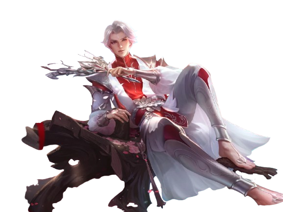
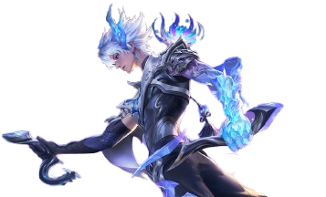
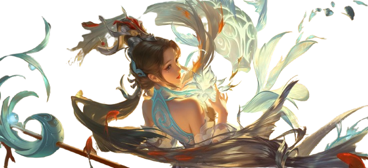
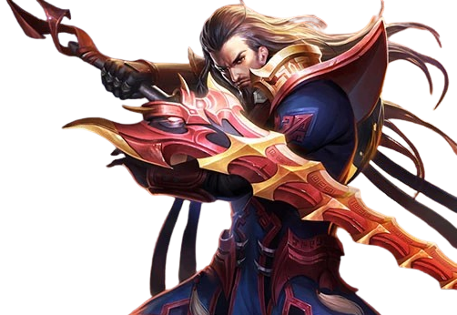

Introduction to Honor of Kings characters
 Sima Yi
Sima Yi
A renowned strategist of the Wei Kingdom, is known for his deep intellect and strategic mind. He excels at stralth and surprise attacks, moving through the battlefield like a ghost, striking swiftly and vanishing into the shadows. Sima Yi does not seek fame; instead, he controls the battlefield through silence and rapid strikes, making him a deadly "Silent Voice" whose presence is felt only in the aftermath of his attacks.

Zhuge Liang
A brilliant strategist from Shu, revered for his intelligence, foresight and mastery of the arcane arts. Gifted since childhood, he combined the wisdom of the ancients with modern tactics, creating powerful magic techniques that could turn the tide of battle. Though quiet and composed, his presence alone commands respect and awe. As a hero, he unleashes devastating orbs of energy and can swiftly dash across the battlefield, always one step ahead of his enemies.

Lan
Lan is a mysterious underwater assassin trained by the Shadow Corps. He grew up in the depths, mastering stealth, speed and deadly precision. With his twin daggers and fluid movements, he strikes without warning and disappears like a ripple in water. Cold, calm and afficient, Lan eliminates targets with surgical accuracy, leaving no trace behind. Beneath his silence lies a turbulent past — and a future shaped by vengeance and destiny.

Da Qiao
A graceful and wise priestess from the Kingdom of Wu, known for her mystical power to manipulate space and time. With her enchanted rings and ancient rituals, she can summon portals to reposition allies and turn the tide of battle. Calm and composed, Da Qiao guides her team like a gentle stream—soft yet unstoppable. Though she walks in peace, her presence in battle ensures harmony through control.

Cao Cao
A formidable warlord whose ambition knows no bounds. As the ruler of Wei, he commands vast armies and an unshakable will. Through strategy, force and manipulation, he forges order in chaos, seeking unity under his rule. Though admired for his brilliance and courage, his methods are cold and ruthless. To subordinates like Sima Yi, he is both a master and a shadow—one that tests loyalty and conceals suspicion. In the arena, Cao Cao channels dark energy, healing himself as he cuts through foes, embodying the iron will of a sovereign unfraid of bloodshed.